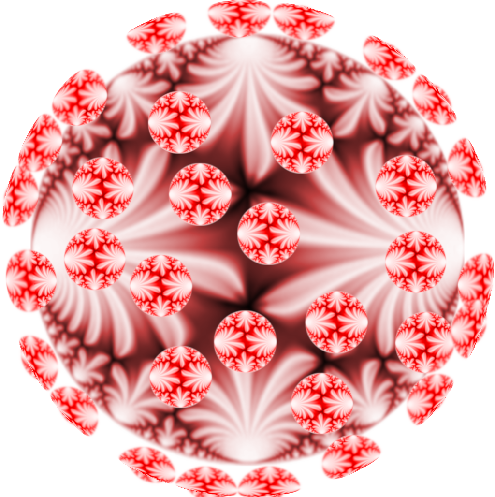

The password is the weight of Ramanujan's Delta function (as digits).
Organizers:
Michalis Neururer (TU Darmstadt)
Markus Schwagenscheidt (ETH Zurich)
We maintain a mailing list for this seminar. If you wish to receive emails with news on the seminar and reminders for talks please just write to one of us.

Talks
08.04.2020 - 15:00-16:00 (GMT+2)
Danylo Radchenko (ETH Zurich) Universal optimality of the E8 and Leech lattices
I will talk about the recent proof of universal optimality of the E8 and Leech lattices (and explain what universal optimality means). While the statement itself does not involve any automorphic forms, the key ingredient in the proof is a new kind of interpolation formula for radial Fourier eigenfunctions which turns out to be intimately related to certain vector-valued modular forms for SL(2,Z).
The talk is based on a joint work with Henry Cohn, Abhinav Kumar, Stephen D. Miller, and Maryna Viazovska.
15.04.2020 -- 15:00-16:00 (GMT+2)
Paloma Bengoechea (ETH Zurich) Periods of modular functions and Diophantine approximation
The "value" of Klein's modular invariant j at a real quadratic irrationality w has been recently defined using the period of j along the geodesic associated to w in the hyperbolic plane. Works of Duke, Imamoglu, Toth, and Masri establish analogies between these values and singular moduli when they are both gathered in traces. We will talk about the distribution of the values j(w) individually, according to the diophantine approximation of w. Some of our results were conjectured by Kaneko. This is joint work with O. Imamoglu.
22.04.2020 -- 15:00-16:00 (GMT+2)
Jan Vonk (IAS Princeton) Singular moduli for real quadratic fields
In the early 20th century, Hecke studied the diagonal restrictions of Eisenstein series over real quadratic fields. An infamous sign error caused him to miss an important feature, which later lead to highly influential developments in the theory of complex multiplication (CM) initiated by Gross and Zagier in their famous work on Heegner points on elliptic curves. In this talk, we will explore what happens when we replace the imaginary quadratic fields in CM theory with real quadratic fields, and propose a framework for a tentative 'RM theory', based on the notion of rigid meromorphic cocycles, introduced in joint work with Henri Darmon. I will discuss several of their arithmetic properties, and their apparent relevance in the study of explicit class field theory of real quadratic fields. This concerns various joint works, with Henri Darmon, Alice Pozzi, and Yingkun Li.
29.4.2020 -- 16:00-17:00 (GMT+2)
Nick Andersen (Brigham Young University) Title tba
06.5.2020 -- 10:00-11:00 (GMT+2)
Soma Purkait (Tokyo Institute of Technology) Title tba
13.5.2020 -- 15:00-17:00 (GMT+2)
Peter Humphries (University College London) Title tba